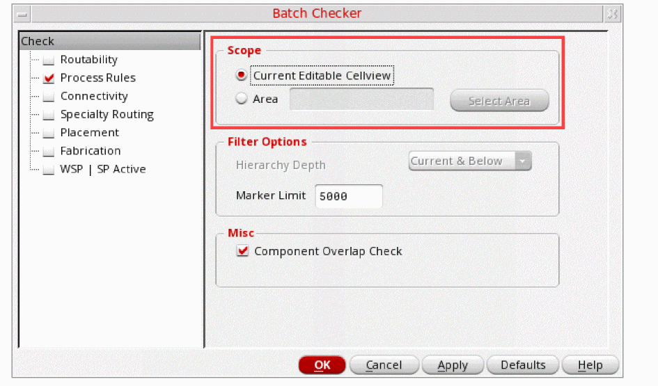
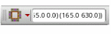
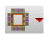

Performing DRD Checks
After a layout is imported from Allegro, DRD checks the layout against design rules defined as constraints. DRD performs the checks in Post-Edit and Batch-Check modes.
To perform DRD checks, do the following:
- Click the Post-Edit icon on the Options toolbar to turn on the Post-Edit mode.
- Choose Verify – Design.
-
In the Scope section of the Batch Checker form, define the scope of checking in batch mode.

- In the Marker Limit field, specify the maximum number of post-edit markers to be created per call for the Post-Edit mode.
- Click OK.
Alternatively, you can use the DRD toolbar  to set up the various batch mode options as follows:
- Click the Verify Design button  .
-
Select an option from the drop-down list.
Current Cellview (default) checks all shapes in the current editable cellview.
Select Area checks all shapes in the specified area of the design.
In this case, specify the lower-left and upper-right coordinates for the region in this format:((xlower ylower) (xupper yupper)), for example,((5.2 3.3) (5.7 3.4)),
Return to top